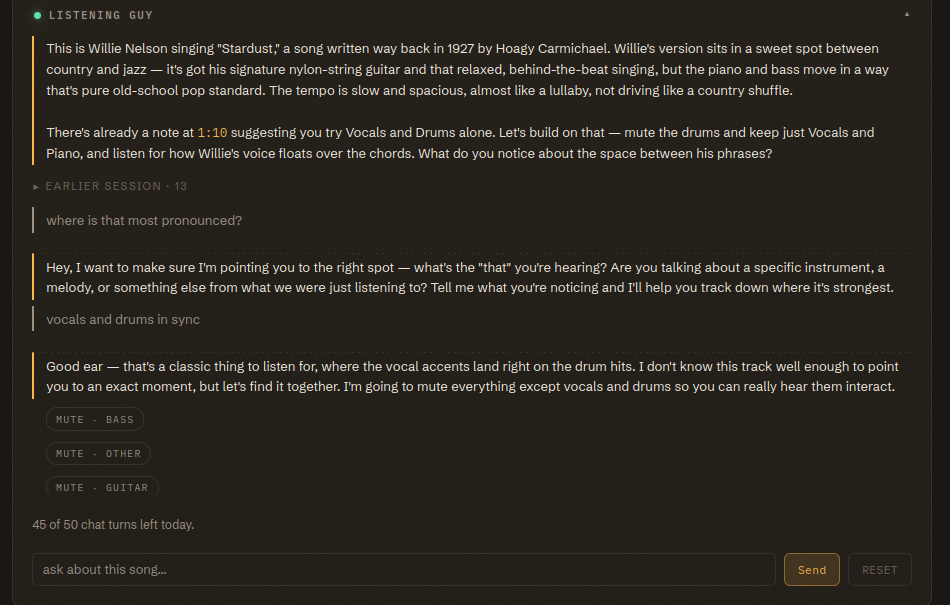

Notes
Pin a comment to a moment in the recording so another listener can find the passage and test your description.
Adding a Note
Move the playhead to the passage you want to mark, then press + Note in the transport row. You can pause first or add the note during playback. Type your comment and save. The note appears beneath the stems with its timestamp and your name.
Click a note's timestamp to jump to the passage. Use [ and ] to move to the previous or next note.

Who Can See a Note
A note on a personal split stays private to your account. A course split also gives the instructor access. Current class members can read its notes through a folder shared with the class. To let students add notes, an instructor selects Class: listen and add notes for the folder and presses Save sharing. The course acknowledgment covers instructor review; class access depends on the folder permission.
Each course note carries its author's name as verified by CUNY Login. Only the author can edit or delete it. When Listening Guy adds a note at a student's request, the note records that student's account as the initiator.
Refreshing Class Notes
The app refreshes notes on an open shared split every few seconds and preserves your playback and draft. Press Refresh class notes for an immediate reload. If a connection problem prevents a save, the app keeps the draft in the box so you can retry.
Write for the Next Listener
Name the layer and describe an audible change. A note such as “Bass drops out here” tells a classmate what to check. You can also suggest a mixer action. In the demonstration, the instructor's note asks students to hear vocals and drums alone, then compare vocals with another stem. The note turns a timestamp into a listening task.
Place notes at section boundaries when the class needs to compare interpretations of form. A label such as verse, chorus, bridge, or solo gives classmates a place to start. Add a sentence about the sound that marks the boundary so they can explain whether they agree. Listening Guy can read those notes when it answers a later question.